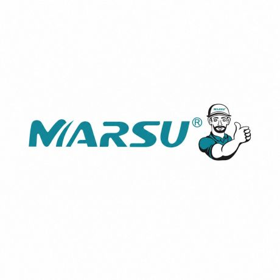

MITEX 2026 · Россия · Стенд 7С905
ООО МАГНАТ-К
Карточка проверена 10 ноября 2026, 09:25 · Источник ↗ · Снимок оригинальной карточки ↗
О компании
Компания «Магнат-К» уже 20 лет успешно работает на рынке, занимая устойчивое положение и заслужив доверие тысяч клиентов. Мы являемся правообладателем популярных торговых марок «Маркус» и «MARSU», что позволяет нам гарантировать подлинность продукции и самые низкие цены . Наша специализация — комплексное обеспечение товарами для дома, сада и строительства. На выставке мы представляем широкий спектр продукции: · Сад и огород: садово-огородный инвентарь, опрыскиватели, шланги. · Строительство и ремонт: строительный инвентарь, электроинструмент, стремянки. · Отопление и климат: газовые плиты, камины, вентиляторы. · Быт и уборка: товары для уборки, сушилки и вешалки. Основное направление деятельности нашей компании — дистрибуция и поставка бытовых и промышленных водяных насосов. Мы гордимся тем, что предлагаем не просто товары, а готовые решения для комфортной жизни. Приглашаем к сотрудничеству оптовых и розничных покупателей — с нами выгодно и надежно!
Контакты
Все контактные сведения из карточки
Контакты Россия, Ставропольский край, Предгорный муниципальный округ, хутор Славяновский, Лысогорская улица дом 1Б Телефон: +79887757775 E-mail: ooomagnat-m@yandex.ru Адрес: 356500, Россия, Ставропольский край, Пятигорск, Лысогорская 1 Б E-mail: ooomagnat-m@yandex.ru Телефон: +7 988 775-77-75
Все рубрики участника
Mitex - Рубрикатор
- 2. Садовая техника, инструмент, инвентарь, оборудование, расходные материалы и насосы
Зал
- Зал № 7
Участник выставки
- MITEX
Видео, каталоги и документы
В доступной карточке нет видео или документов. Смотрите сайт участника.